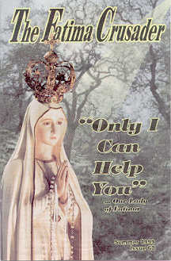
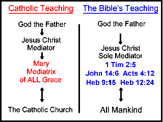

The following quotations, from various Catholic sources, will
establish fairly well the unbiblical teaching of the Catholic Church which
claims Mary to be the distributor or mediatrix of all of God's grace.
Speaking to those gathered at Castel Gandolfo on August 15,
2010, the Catholic feast of the Assumption of Mary, Pope Benedict XVI prior to
the Angelus said:
... the All Holy is invoked as Heavenly Mother, who holds the
Son of God in her arms and under whose protection the whole of humanity finds
refuge, with the very ancient prayer, "We shelter under your protection, Holy
Mother of God: despise not our petitions in our needs, but deliver us from
every danger, O glorious and Blessed Virgin".
...
Dear Brothers and Sisters, let us trust in the One who as the Servant of God Paul VI
affirmed "having been assumed into Heaven, she has not abandoned her mission
of intercession and salvation" (Marialis
Cultus, #18, Paul VI, Feb. 2, 1974).
To her, guide of the Apostles, support of Martyrs, light of the Saints, let us
address our prayers, imploring that she accompany us in this earthly life,
that she help us look to Heaven and that she welcome us one day together with
her Son Jesus.--
Vatican
UBI PRIMUM
4. ... Great indeed is Our trust in Mary. The resplendent glory of her
merits, far exceeding all the choirs of angels, elevates her to the very
steps of the throne of God.[1] Her foot has crushed the head of Satan. Set
up between Christ and His Church,[2] Mary, ever lovable and full of grace,
always has delivered the Christian people from their greatest calamities and
from the snares and assaults of all their enemies, ever rescuing them from
ruin.
5. And likewise in our own day, Mary, with the ever merciful affection so
characteristic of her maternal heart, wishes, through her efficacious
intercession with God, to deliver her children from the sad and grief-laden
troubles, from the tribulations, the anxiety, the difficulties, and the
punishments of God's anger which afflict the world because of the sins of
men. Wishing to restrain and to dispel the violent hurricane of evils which,
as We lament from the bottom of Our heart, are everywhere afflicting the
Church, Mary desires to transform Our sadness into joy. The foundation of
all Our confidence, as you know well, Venerable Brethren, is found in the
Blessed Virgin Mary. For, God has committed to Mary the treasury of all good
things, in order that everyone may know that through her are obtained every
hope, every grace, and all salvation. For this is His will, that we obtain
everything through Mary.[3]
1. St. Gregory, Pope, de Exposit. in libros Regum.
2. St. Bernard, Serm. in cap. XII Apocalyps.
3. St. Bernard, In Nativit. S. Mariae de Aquaeductu.
Source:  UBI
PRIMUM, (On the Immaculate Conception of Mary), Encyclical of Pope
Pius IX, February 2, 1849.
UBI
PRIMUM, (On the Immaculate Conception of Mary), Encyclical of Pope
Pius IX, February 2, 1849.
OCTOBRI MENSE
4. ...With equal truth may it be also affirmed that, by the will of God,
Mary is the intermediary through whom is distributed unto us this immense
treasure of mercies gathered by God, for mercy and truth were created by
Jesus Christ.[6] Thus as no man goeth to the Father but by the Son, so no
man goeth to Christ but by His Mother. ...
6. ... Faithful to the religious example of our fathers, let us have
recourse to Mary, our holy Sovereign. Let us entreat, let us beseech, with
one heart, Mary, the Mother of Jesus Christ, our Mother. "Show thyself to be
a mother; cause our prayers to be accepted by Him Who, born for us,
consented to be thy Son."[7]
6. Jn 1.17.
7. Ex sacr. liturg.
Source:
OCTOBRI MENSE
(On the Rosary), Encyclical of Pope Leo XIII, promulgated on September 22,
1891.
MAGNAE DEI MATRIS
9. When we have recourse to Mary in prayer, we are having recourse to the
Mother of mercy, who is so well disposed toward us that, whatever the
necessity that presses upon us especially in attaining eternal life, she is
instantly at our side of her own accord, even though she has not been
invoked. She dispenses grace with a generous hand from that treasure with
which from the beginning she was divinely endowed in fullest abundance that
she might be worthy to be the Mother of God. By the fullness of grace which
confers on her the most illustrious of her many titles, the Blessed Virgin
is infinitely superior to all the hierarchies of men and angels, the one
creature who is closest of all to Christ. "It is a great thing in any saint
to have grace sufficient for the salvation of many souls; but to have enough
to suffice for the salvation of everybody in the world is the greatest of
all; and this is found in Christ and in the Blessed Virgin."[1]
1. St. Thomas Aquinas, Super Salut. Ang.
Source:
MAGNAE DEI MATRIS (On the Rosary), Encyclical of Pope Leo XIII
promulgated on September 8, 1892.
IUCUNDA SEMPER EXPECTATIONE
5. If in all this series of Mysteries, Venerable Brethren, are developed
the counsels of God in regard to us -- "counsels of wisdom and of
tenderness" (St. Bernard) -- not less apparent is the greatness of the
benefits for which we are debtors to the Virgin Mother. No man can meditate
upon these without feeling a new awakening in his heart of confidence that
he will certainly obtain through Mary the fullness of the mercies of God.
And to this end vocal prayer chimes well with the Mysteries. First, as is
meet and right, comes the Lord's Prayer, addressed to Our Father in Heaven:
and having, with the elect petitions dictated by Our Divine Master, called
upon the Father, from the throne of His Majesty we turn our prayerful voices
to Mary. Thus is confirmed that law of merciful meditation of which We have
spoken, and which St. Bernardine of Siena thus expresses: "Every grace
granted to man has three degrees in order; for by God it is communicated to
Christ, from Christ it passes to the Virgin, and from the Virgin it descends
to us."
Source:
IUCUNDA SEMPER EXPECTATIONE (On the Rosary), Encyclical of
Pope Leo XIII promulgated on September 8, 1894.
ADIUTRICEM
7. It is impossible to measure the power and scope of her offices since
the day she was taken up to that height of heavenly glory in the company of
her Son, to which the dignity and luster of her merits entitle her. From her
heavenly abode she began, by God's decree, to watch over the Church, to
assist and befriend us as our Mother; so that she who was so intimately
associated with the mystery of human salvation is just as closely associated
with the distribution of the graces which for all time will flow from the
Redemption.
8. The power thus put into her hands is all but unlimited. How unerringly
right, then, are Christian souls when they turn to Mary for help as though
impelled by an instinct of nature, confidently sharing with her their future
hopes and past achievements, their sorrows and joys, commending themselves
like children to the care of a bountiful mother. How rightly, too, has every
nation and every liturgy without exception acclaimed her great renown, which
has grown greater with the voice of each succeeding century. Among her many
other titles we find her hailed as "our Lady, our Mediatrix,"[3] "the
Reparatrix of the whole world,"[4] "the Dispenser of all heavenly gifts."[5]
9. Since faith is the foundation, the source, of the gifts of God by
which man is raised above the order of nature and is endowed with the
dispositions requisite for life eternal, we are in justice bound to
recognize the hidden influence of Mary in obtaining the gift of faith and
its salutary cultivation - of Mary who brought the "author of faith"[6] into
this world and who, because of her own great faith, was called "blessed." "O
Virgin most holy, none abounds in the knowledge of God except through thee;
none, O Mother of God, attains salvation except through thee; none receives
a gift from the throne of mercy except through thee."[7]
3. St. Bernard, Serm.II in Adv.
4. St. Tharasius, Orat. in Praesentatione.
5. On Off. Graec., 8 Dec.
6. Hebr. 12:1.
7. St. Germ. Constantinop., Orat. 11, in Dortnitione B.M.V.
Source:
ADIUTRICEM (On the Rosary), Encyclical of Pope Leo XIII,
promulgated on September 5, 1895.
Here you see a coin commemorating the pontificate of John Paul II. The
front of the coin declares him to be the Pontifex Maximus. On the reverse side
is his papal heraldic shield. The large letter M on the shield stands for
Mary, the mother of God. The words at the bottom "TOTUS TUUS" are transposed
and excerpted from a latin prayer composed by Saint Louis-Marie Grignion de
Montfort: tuus totus ego sum, et omnia mea tua sunt, O Virgo super omnia
benedicta, which in English reads "I belong to you entirely, and all that
I possess is yours, Virgin blessed above all."
Quoting Pope John Paul II, he proclaimed on the feast day of the Immaculate
Conception in 1978-
"The Pope, at the beginning of his episcopal service in St. Peter's Chair
in Rome, wishes to entrust the Church particularly to her in whom there was
accomplished the stupendous and complete victory of good over evil, of love
over hatred, of grace over sin; to her of whom Paul VI said that she is '
the beginning of the better world;' to the Blessed Virgin. He entrusts to
her himself, as the servant of servants, and all those whom he serves, all
those who serve with him. He entrusts to her the Roman Church, as token and
principle of all the churches in the world, in their universal unity. He
entrusts it to her and offers it to her as her property." -- Insegnamenti
Giovanni Paolo II (1978), (Vatican City: Libreria Editrice Vaticana, 313)
Source: TOTUS TUUS, by Arthur Burton Calkins, pages 21 and 27,
Academy of the Immaculate, New Bedford, Massachusetts, ISBN 0-9635345-0-5,
bearing the Nihil Obstat and Imprimatur of the Catholic Church.
Amazing isn't it! Pope John Paul II has entrusted himself and the entire
church to the care of the Virgin Mary as her "property"! Here is more from
John Paul II-
VERITATIS SPLENDOR
118. At the end of these considerations, let us entrust ourselves, the
sufferings and the joys of our life, the moral life of believers and people
of good will, and the research of moralists, to Mary, Mother of God and
Mother of Mercy. ...
120. Mary is also Mother of Mercy because it is to her that Jesus
entrusts his Church and all humanity. At the foot of the Cross, when she
accepts John as her son, when she asks, together with Christ, forgiveness
from the Father for those who do not know what they do (cf. Lk 23:34), Mary
experiences, in perfect docility to the Spirit, the richness and the
universality of God's love, which opens her heart and enables it to embrace
the entire human race. Thus Mary becomes the mother of each and every one of
us, the Mother who obtains for us divine mercy.
Source:
VERITATIS SPLENDOR,
(Splendor of the Truth), Encyclical of Pope John Paul II, August 6, 1993:
(numbers are paragraph numbers), online at EWTN.
Imagine that. The Roman Catholic Church teaches that Mary distributes the
graces of God and dispenses all the gifts of salvation that Jesus has won for
us. In a nutshell, they say salvation is gained through Mary and this is why
she is called Mediatrix. And then, because of her sacrifice and suffering, she
also helped redeem the fallen human race. It is no wonder that the Catholics
pray to her, they believe her to be the agent of salvation between God and
man. She will listen, when God is cold and indifferent to our plight? Note the
following from St. Alphonsus Liguori, a respected doctor of the church:
The Glories of Mary
CHAPTER I HAIL HOLY QUEEN
[pg. 6 /18] How great, then, should be our confidence in this Queen,
knowing her great power with God, and that she is so rich and full of mercy,
that there is no one living on the earth who does not partake in her
compassion and favor.
Our Blessed Lady herself revealed this to St. Bridget,
saying: "I am the Queen of heaven and the Mother of Mercy; I am the joy of
the just and the door through which sinners are brought to God. There is no
sinner on earth so accursed as to be deprived of my mercy. ...
CHAPTER II OUR LIFE, OUR SWEETNESS
[pg. 26 /63] Truly are those souls to be pitied who abandon this defense,
in ceasing their devotion to Mary, and no longer [pg. 27] recommending
themselves to her in times of danger. If the sun ceased to rise, says St.
Bernard, how could the world become other than a chaos of darkness and
horror?
Applying this question to Mary, he repeats it, "Take away the
sun and [pg. /64] where will be the day? Take away Mary, and what will be
left but the darkest night?
When a soul loses devotion to Mary, it is immediately
enveloped in darkness, and it is in that darkness of which the Holy Spirit
speaks in the Psalms: "You bring darkness and it is night; then all the
beasts of the forest roam about." (104:20) ...
CHAPTER IV TO THEE DO WE CRY
[pg. 48 /112] St. Anselm reminds us that we may obtain mercy more quickly
from Mary than from Jesus, because Jesus is also a judge who can punish,
while Mary exercises mercy as a patroness. It is not as if Mary were more
powerful than Jesus, for we know that Jesus Christ is our only Savior, and
that He alone by His merits has obtained and obtains salvation for us.
He reminds us: "We often obtain more promptly what we ask by
invoking Mary than by invoking Jesus. Her Son is lord and judge of all, and
discerns the merits of each one; therefore, if He does not immediately grant
the prayers of all, He is just. When however, the Mother's name is invoked,
[pg. /113] though the merits of the suppliant are not such as to deserve
that his favor be granted, those of the Mother supply, that he may receive."
Many things are asked from God and are not granted; they are
asked from Mary and are obtained. Now why is this? Because God has thus
decreed to honor His Mother. ...
CHAPTER V TO THEE DO WE SIGH
[pg. 56 /128] There can be no doubt that by the merits of Jesus, Mary was
made the mediatrix of our salvation - not, indeed, a mediatrix of justice,
but of favor and intercession. St Bonaventure expressly calls her: "Mary,
the most faithful mediatrix of our salvation." St. Lawrence Justinian asks:
"How can she be otherwise than full of grace, who has been made the ladder
to paradise, the gate of heaven, the most true mediatrix between God and
man?" ... [pg. 57 /129] ... That it is most useful and holy to have recourse
to the intercession of Mary can only be doubted by those who have not faith.
But, what we intend to prove here, is that the intercession of Mary is even
necessary to salvation. We say necessary - not absolutely but morally.
[pg. /136] Again, the holy
church calls her 'the happy gate of
heaven;' for as the same Saint Bernard
remarks: 'As every mandate of grace that is sent by a king passes by the
palace-gates, so does every grace that comes
from heaven to the world pass through the
hands of Mary.' Saint Bonaventure says that
Mary is called 'the
gate of heaven, because no one can
enter that blessed kingdom without passing by her.'
[pg. 61 /143] St. John Damascene did not scruple to cry out: "Pure and
immaculate Virgin, save me, and deliver me from eternal damnation!" St.
Bonaventure called Mary "the salvation of those who invoked her." And St.
Germanus had written previously: "No one is saved but through Mary."
St. Cajetan used to say that [pg. /144] we may seek for
graces but shall never find them without the intercession of Mary. St.
Antonius expresses it this way: "Whoever asks and expects to obtain graces
without the intercession of Mary endeavors to fly without wings."
Blessed Raymond Jordan repeats the same thing: "Our salvation
is in her hands." Cassian is even stronger, saying: "The salvation of all
depends on their being favored and protected by Mary."
[pg. 62 /145] And as we have access to the Eternal Father,
says St. Bernard, only through Jesus Christ, so have we access to Jesus
Christ only through Mary: "By you we have access to the Son, O blessed
finder of grace, bearer of life, and mother of salvation, that we may
receive Him from you, who through you was given to us." ...
CHAPTER VII O, GRACIOUS ADVOCATE
[ pg.
/169] 'On this account it was,' says Saint
Bernard, 'that the
Eternal Father, wishing to show all the mercy possible, besides
giving us Jesus Christ, our principal Advocate with Him, was pleased also to
give us Mary, as our Advocate with Jesus Christ.' 'There is no doubt,' the
Saint adds, 'that Jesus Christ is the only mediator of justice between men
and God; that, in virtue of His own merits and promises, He will and can
obtain us pardon and the Divine favours; but because men acknowledge and
fear the Divine Majesty, which is in Him as God, for this reason it was
necessary to assign us another Advo [pg. /170] cate, to whom we might
have recourse with less few and more confidence, and this Advocate is Mary,
than whom we cannot find one more powerful with His Divine Majesty, or one
more merciful towards ourselves.' The Saint says,
'Christ is a faithful and powerful Mediator between God and men, but
in Him men fear the majesty of God. A mediator, then, was needed with the
Mediator Himself; nor could a more fitting one be found than Mary.'23
'But,' continues the same Saint, ' should any one fear to go to the feet of
this most sweet Advocate, who has nothing in her of severity, nothing
terrible, but who is all courteous, amiable, and benign, lie would indeed be
offering an insult to the tender compassion of Mary.'24
And he adds, 'Read, and read again, as often as you please, all that is said
of her in the Gospels, and if you can find any the least trait of severity
recorded of her, then fear to approach her. But no, this you can never find;
and therefore go to her with a joyful heart, and she will save you by her
intercession.'25
Source: The Glories of Mary, by St. Alphonsus Liguori (1696-1787),
Edited and abridged by Msgr. Charles Dollen, copyright 1990 by the Society of
St. Paul, published by Alba House, New York, pages 6, 26-27, 48, 56, 61-62.
Page numbers after the / slash apply to
corresponding pages in The Glories of Mary, by St. Alphonsus
Liguori, translated from the Italian, revised by the Right Rev. Robert A.
Coffin, published in London in 1868 by Burns, Oates & Washbourne Ltd.,
publishers to the Holy See.
Dignity and Duties of the Priest
And if, on account of the moral necessity of Mary's intercession for all,
every Christian ought to be devoted to the Mother of God, how much more
should priests, who are bound by greater obligations, and stand in need of
greater graces for salvation, practise devotion in her honor! We priests
should remain always at the feet of Mary, asking the aid of her prayers. St.
Francis Borgia had great doubts about the salvation of those that have not a
special devotion to Mary; because, according to St. Antonine, he who expects
graces from God without the intercession of Mary attempts to fly without
wings. St. Anselm has gone so far as to say: "It is impossible to be saved
if we turn away from thee, O Mary." St. Bonaventure has said the same: "He
that neglects her will die in his sins." Blessed Albertus Magnus says: 'The
people that do not serve thee will perish." And speaking of Mary, Richard of
St. Laurence says: "All those whom this ship does not receive are lost in
the sea [pg. 414] of this world." But, on the other hand, he who is faithful
in the service of Mary will be certainly saved. "Oh Mother of God," says St.
John Damascene, "if I put my confidence in you I shall be saved. If I am
under your protection I have nothing to fear; for to be devoted to you is to
have certain arms of salvation which God gives only to those whose salvation
he wills in a special manner."
Source: Dignity and Duties of the Priest, by St. Alphonsus De
Liguori, published by the Redemptorist Fathers, copyright Very Rev. James
Barron, C.SS.R., 1927, bearing the Nihil Obstat and Imprimatur of the Catholic
Church, pages 413, 414.
Here is a typical prayer to Mary from the
Family Consecration Prayer book, prayer #50B:
Act of Consecration to Jesus through Mary
O Immaculata, Queen of Heaven and earth, refuge of sinners and our most
loving Mother, God has willed to entrust the entire order of Mercy to You.
I, "name", a repentant sinner, cast myself at your feet humbly imploring you
to take me with all that I am and have, wholly to yourself as your
possession and property.
Please make of me, of all my powers of soul and body, of my whole life,
death and eternity, whatever most pleases you. If it pleases you, use all
that I am and have without reserve, wholly to accomplish what was said of
you: "She will crush your head," and "You alone have destroyed all heresies
in the whole world."
Let me be a fit instrument in your immaculate and merciful hands for
introducing and increasing your glory to the maximum in all the many strayed
and indifferent souls, and thus help extend as far as possible the blessed
kingdom of the most Sacred Heart of Jesus.
For wherever you enter you obtain the grace of conversion and growth in
holiness since it is through your hands that all graces come to us from the
most Sacred Heart of Jesus. Amen.
Questions and Answers about Mary
6. How is Mary our intercessor?
Mary is our intercessor because in heaven she continues to intercede with
her Son, Jesus, for us in the world.
She is our intercessor because of the following reasons: (1) As worthy
Mother of God and full of grace, she occupies a middle position between God
and his creatures. (2) Together with Christ and under him, she cooperated in
the reconciliation of God and mankind while she was still on earth. (3) Now
from heaven she distributes the graces that God bestows on his children.
Of course, this intercession is always secondary and subject to Christ's
primary and self-sufficient intercessory role. All favors granted by God to
his rational creatures are granted in virtue of and because of Mary's
intercession. It is not necessary that we explicitly implore her
intercessions in our prayers. But whether we mention her or not, it is
through her that we receive whatever we receive.
Source: Questions and Answers about Mary, by Anthony M. Buono, a
booklet published by Liguori Publications, copyright 1993, and bearing the
IMPRIMI POTEST, and IMPRIMATUR of the Roman Catholic Church, page 9.
LUMEN GENTIUM
60. There is but one Mediator as we know from the words of the apostle,
"for there is one God and one mediator of God and men, the man Christ Jesus,
who gave himself a redemption for all". [1 Tim 2:5-6] The material duty of
Mary toward men in no wise obscures or diminishes this unique mediation of
Christ, but rather shows His power.
62. ... Therefore the Blessed Virgin is invoked by the Church under the
titles of Advocate, Auxiliatrix, Adjutrix, and Mediatrix(16*). This, however, is
to be so understood that it neither takes away from nor adds anything to the
dignity and efficaciousness of Christ the one Mediator.
(16) Cfr. Leo XIII, Litt. Encycl.
Adiutricem populi, 5 sept. 1895: ASS 15 (1895-96), p. 303. -
S. Pius X, Litt. Encycl. Ad diem illum, 2 febr. 1904: Acta, I, p. 154- Denz.
1978 a (3370) .
Pius XI, Litt. Encycl. Miserentissimus, 8 maii 1928: AAS 20 (1928) p. 178.
Pius XII, Nuntius Radioph., 13 maii 1946: AAS 38 (1946) p. 266.
Source:
Dogmatic
Constitution on the Church (Lumen Gentium), promulgated by Pope
Paul VI, November 21, 1964.
NO GRACE WITHOUT MARY'S INTERCESSION
... our baptism compels us not only to heed the heavenly Father, but also
to heed the great Mother of God, whom the Father created in His eternal plan
to be the Mediatrix of grace to mankind. Just as there is no salvation outside
of belonging to the Catholic Church, which is the immaculate Bride of Christ,
there is no communication of divine grace without the intercession of the
Virgin Mary, who acts as the channel of God's gifts.
Source:
Our
Lady's Path of Contemplation by Peter A. Kwasniewski,
The Catholic
Faith, 2.6 (November-December 1996): 5�10.
THE SECRET OF MARY
[pg. 14]
Universal Treasurer of God's Grace
10. 4� God has entrusted Mary with the keeping, the administration and
distribution of all His graces, so that all His graces and gifts pass
through her hands; and (according to the power she has received over them),
as St. Bernadine teaches, Mary gives to whom she wills, the way she wills,
when she wills and as much as she wills, the graces of the Eternal Father,
the virtues of Jesus Christ and the gifts of the Holy Ghost.
[pg. 38]
Act through Mary
48. 3� We must never go to Our Lord except through Mary, through
her intercession and her influence with Him. We must never be without Mary
when we pray to Jesus.
Act for Mary
49. 4� Lastly, we must do all our actions for Mary. This means
that as slaves of this august princess, we must work only for her, for her
interests and her glory - making this the immediate end of all our actions -
and for the glory of God, which must be their final end. In everything we do
we must renounce our self-love, because very often self-love sets itself up
in an imperceptible manner as the end of our actions. We should often
repeat, from the bottom of our heart: <<O my dear Mother! It is for thee
that I go here or there; for thee, that I do this or that; for thee, that I
suffer this pain or wrong>>.
[pg. 39]
PRACTICAL COUNSELS CONCERNING THE
SPIRIT OF THE HOLY SLAVERY
Not More Perfect to Go Straight to Jesus without Mary
50. Beware, predestinate soul, of believing that it is more
perfect to go straight to Jesus, straight to God. Without Mary, your action
and your intention will be of little value; but if you go to God through
Mary, your work will be Mary's work, and consequently it will be sublime and
most worthy of God.
Source: The Secret of Mary, by St. Louis Marie de Montfort,
published by Montfort Publications, Bay Shore, New York 11706, bearing the
Imprimi potest, Nihil obstat and Imprimatur of the Catholic Church, pages 14,
38, 39.
The Secret of Mary
online at EWTN.
Note this cover on the Summer 1999 edition
(Issue 60), of the Catholic magazine The Fatima Crusader,
which cites the apparition of Mary at Fatima as boldly stating "Only I
Can Help You"!
The dignity of Mother of God is an almost infinite dignity, says
Saint Thomas; for this is to be Mother of an Infinite Being, Who is
God. This is why, in creating Her, the Lord preserved Her from
original sin, adorned Her with all graces possible for a creature to
have, enriched Her with virtues and merits, confided to Her the
treasury of His mercies and made Her dispenser of them. - quoted from
page 20.
(Note the capitalization of the "H" in her, in the same manner as the
references to Deity.)
Here is the entire article online:
Proper Devotion to
the Blessed Virgin |
 |
|
The Fatima Crusader is
published by the National Committee for the National Pilgrim Virgin of
Canada, and is distributed in the U.S.A. with the cooperation of the
Servants of Jesus and Mary. |
The Catechism of the Catholic Church
971. "'All generations will call me blessed': 'The Church's devotion to
the Blessed Virgin is intrinsic to Christian worship.' [Lk 1:48 ; Paul VI,
MC 56.] The Church rightly honors 'the Blessed Virgin with special devotion.
From the most ancient times the Blessed Virgin has been honored with the
title of 'Mother of God,' to whose protection the faithful fly in all their
dangers and needs....
That is blasphemy, a doctrine of death, and precisely the "other" gospel
Paul warns about.
Gal 1:6 I marvel that ye are so soon removed from him that called you
into the grace of Christ unto another gospel:
Gal 1:7 Which is not another; but there be some that trouble you, and would
pervert the gospel of Christ.
Gal 1:8 But though we, or an angel from heaven, preach any other gospel unto
you than that which we have preached unto you, let him be accursed.
Gal 1:9 As we said before, so say I now again, If any man preach any other
gospel unto you than that ye have received, let him be accursed.
[Mary] ... "to whose protection the faithful fly in all their dangers and
needs...." That is NOT what scripture teaches:
Psa 46:1 ... God is our refuge and strength, a very present help in
trouble.
Psa 46:7 The LORD of hosts is with us; the God of Jacob is our refuge.
Psa 46:11 The LORD of hosts is with us; the God of Jacob is our refuge.
Mary is exalted above all creatures
3. As I contemplate the peaks of these mountains, which are now familiar
to me, I often think of Mary. God has raised her above all angelic and
earthly creatures and has made her our mainstay on the journey towards
heaven.
Source: Pope John Paul II, Angelus: 15 July Val D'Aosta, � L'Osservatore
Romano - 18 July 2001.
There are two kinds of
mediation. The first is that one receives something from another, but with
some purpose in mind; then the one who has received the gift is not the owner,
but must use the gift in such a way as has been told to him; meanwhile another
received the same gift but for his exclusive property and has the right to
administer it as he chooses.
The
Blessed Mother is in the second category, having received graces in that
manner from the Godhead. She is not like a mailcarrier. She does not receive
graces from God for an appointed purpose so that She might use them in one way
or another. The Immaculate Virgin receives graces from God for Her own
exclusive property and She dispenses them to us how She wills, to whom She
wills, and inasmuch as She wills, for these are Her own. Here, finally, do we
see how holy and great God made His Blessed Mother, and how much we should
honor Her.�
Source: Sayings and Examples of St. Maximilian Kolbe, Manila:
Franciscan Conventual Publication, pp. 141‑142.
Pope Benedict XVI in Cuba
I have come as a pilgrim to the house of
the blessed statue of Our Lady of Charity, la Mambisa as you call
upon her with affection. Her presence in this town of El Cobre is a gift
from heaven for all Cubans. ...
Let all those you meet know, whether
near or far, that I have entrusted to the Mother of God the future of your
country, advancing along the ways renewal and hope, for the greater good of
all Cubans. —
Benedict XVI: Tuesday, 27 March 2012.
I too greatly have wished to come among
you as a pilgrim of charity, in order to thank the Virgin Mary for the
presence of her venerable statue of the Sanctuary of El Cobre, whence for
four centuries she has accompanied the journey of the Church in this nation
and given encouragement to all Cubans ...
As I bid you a heartfelt adios, I
ask our Lady of Charity of El Cobre to protect all Cubans under her mantle,
to sustain them in the midst of their trials and to obtain from Almighty God
the grace that they most desire. Hasta siempre, Cuba, a land made
beautiful by the maternal presence of Mary. —
Benedict XVI: Wednesday, 28 March 2012.
There is a word that aptly describes all of the above Catholic
teaching - AntiChrist. Mary has been completely substituted for Jesus as the
mediator with mankind, a concept that is utterly unbiblical, and worthy only
of the apostate harlot church, Mystery Babylon.
Jesus, the one mediator of God's grace and
mercy.
John 1:17 For the law was given by Moses, but grace and truth came by Jesus
Christ.
John 14:6 Jesus saith unto him, I am the way, the
truth, and the life: no man cometh unto the Father, but by me.
Rom 1:3 Concerning his Son Jesus Christ our Lord, which was made of the
seed of David according to the flesh;
Rom 1:4 And declared to be the Son of God with power, according to the spirit
of holiness, by the resurrection from the dead:
Rom 1:5 By whom we have received grace and apostleship, for obedience to the
faith among all nations, for his name:
Rom 1:6 Among whom are ye also the called of Jesus Christ:
Rom 1:7 To all that be in Rome, beloved of God, called to be saints: Grace to
you and peace from God our Father, and the Lord Jesus Christ.
Rom 3:21 But now the righteousness of God without the law is manifested,
being witnessed by the law and the prophets;
Rom 3:22 Even the righteousness of God which is by faith of Jesus Christ unto
all and upon all them that believe: for there is no difference:
Rom 3:23 For all have sinned, and come short of the glory of God;
Rom 3:24 Being justified freely by his grace through the redemption that is in
Christ Jesus:
Rom 3:25 Whom God hath set forth to be a propitiation through faith in his
blood, to declare his righteousness for the remission of sins that are past,
through the forbearance of God;
Rom 3:26 To declare, I say, at this time his righteousness: that he might be
just, and the justifier of him which believeth in Jesus.
Rom 5:1 Therefore being justified by faith, we have peace with God through
our Lord Jesus Christ:
Rom 5:2 By whom also we have access by faith into this grace wherein we stand,
and rejoice in hope of the glory of God.
Rom 5:17 For if by one man's offence death reigned by one; much more they
which receive abundance of grace and of the gift of righteousness shall reign
in life by one, Jesus Christ.)
Rom 5:21 That as sin hath reigned unto death, even so might grace reign
through righteousness unto eternal life by Jesus Christ our Lord.
Rom 16:24 The grace of our Lord Jesus Christ be with you all. Amen.
1 Cor 1:3 Grace be unto you, and peace, from God our Father, and from the
Lord Jesus Christ.
2 Cor 1:2 Grace be to you and peace from God our Father, and from the Lord
Jesus Christ.
Eph 1:2 Grace be to you, and peace, from God our Father, and from the Lord
Jesus Christ.
Phil 1:2 Grace be unto you, and peace, from God our Father, and from the
Lord Jesus Christ.
1 Th 1:1 Paul, and Silvanus, and Timotheus, unto the church of the
Thessalonians which is in God the Father and in the Lord Jesus Christ: Grace
be unto you, and peace, from God our Father, and the Lord Jesus Christ.
1 Th 5:28 The grace of our Lord Jesus Christ be with you. Amen.
2 Th 1:2 Grace unto you, and peace, from God our Father and the Lord Jesus
Christ.
2 Th 1:12 That the name of our Lord Jesus Christ may be glorified in you,
and ye in him, according to the grace of our God and the Lord Jesus Christ.
2 Th 3:18 The grace of our Lord Jesus Christ be with you all. Amen.
1 Tim 1:2 Unto Timothy, my own son in the faith: Grace, mercy, and peace,
from God our Father and Jesus Christ our Lord.
1 Tim 1:14 And the grace of our Lord was exceeding abundant with faith and
love which is in Christ Jesus.
2 Tim 1:2 To Timothy, my dearly beloved son: Grace, mercy, and peace, from
God the Father and Christ Jesus our Lord.
2 Tim 1:8 Be not thou therefore ashamed of the testimony of our Lord, nor
of me his prisoner: but be thou partaker of the afflictions of the gospel
according to the power of God;
2 Tim 1:9 Who hath saved us, and called us with an holy calling, not according
to our works, but according to his own purpose and grace, which was given us
in Christ Jesus before the world began,
2 Tim 1:10 But is now made manifest by the appearing of our Saviour Jesus
Christ, who hath abolished death, and hath brought life and immortality to
light through the gospel:
2 Tim 2:1 Thou therefore, my son, be strong in the grace that is in Christ
Jesus.
Titus 1:4 To Titus, mine own son after the common faith: Grace, mercy, and
peace, from God the Father and the Lord Jesus Christ our Saviour.
Phile 1:3 Grace to you, and peace, from God our Father and the Lord Jesus
Christ
2 John 1:3 Grace be with you, mercy, and peace, from God the Father, and
from the Lord Jesus Christ, the Son of the Father, in truth and love.
Rev 22:21 The grace of our Lord Jesus Christ be with you all. Amen.
The Bible clearly teaches that grace and mercy for the sinner come from God
the Father, through Jesus Christ, the one mediator of God's grace and
mercy.
1 Tim 2:5 For there is one God, and one mediator between God and men,
the man Christ Jesus;
1 Tim 2:6 Who gave himself a ransom for all, to be testified in due
time.
Here is a diagram illustrating the difference between Catholic teaching and that of the Bible.

Heb 4:14 Seeing then that we have a great high priest, that is passed
into the heavens, Jesus the Son of God, let us hold fast our profession.
Heb 4:15 For we have not an high priest which cannot be touched with the
feeling of our infirmities; but was in all points tempted like as we are,
yet without sin.
Heb 4:16 Let us therefore come boldly unto the throne of grace, that we
may obtain mercy, and find grace to help in time of need.
Heb 9:14 How much more shall the blood of Christ, who through the eternal
Spirit offered himself without spot to God, purge your conscience from dead
works to serve the living God?
Heb 9:15 And for this cause he is the mediator of the new testament, that by
means of death, for the redemption of the transgressions that were under the
first testament, they which are called might receive the promise of eternal
inheritance.
Heb 12:24 And to Jesus the mediator of the new covenant, and to the blood
of sprinkling, that speaketh better things than that of Abel.
Who does the Bible say we are to approach for forgiveness under the New
Covenant?
Jesus, the one mediator of God's grace and mercy!
Acts 4:10 Be it known unto you all, and to all the people of Israel, that
by the name of Jesus Christ of Nazareth, whom ye crucified,
whom God raised from the dead, even by him doth this man stand here before
you whole.
Acts 4:11 This is the stone which was set at nought of you builders, which
is become the head of the corner.
Acts 4:12 Neither is there salvation in any other: for there is none
other name under heaven given among men, whereby we must be saved.
The death of Jesus on the cross is the only sacrifice that redeemed man. To
advocate otherwise is Antichrist. Catholics pray to Mary because they look to
her for grace and mercy, not Jesus alone, and that IS official Catholic teaching, whether most
Catholics know it or not. Salvation will not be found in prayers to Mary (who
is quite dead anyway). It can only be found in faith in the death and
resurrection of Jesus Christ in your place, to wipe away the stain of sin in
your life. Nothing Mary did assisted in paying that price at all. Prayers to
Mary or saints are completely futile. Pray to God ONLY, and then He will hear
you.